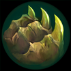
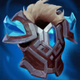

起手裝備
- 紅水晶
先補最大生命，讓前期雪球進場與吞噬回復更有容錯。
Nunu & Willump · 雪球強開／高續航範圍控制型坦克
不要在敵方五人正面視野內才開始滾雪球。先退到側邊或塔後取得加速距離，撞中後用三技黏人；大絕可在隊友控制接上時完整蓄力，也可以提早放掉當作範圍緩速與護盾。
本站當時評級理由：努努和威朗普在單線能用雪球強開、雪球齊射留人，大絕又能逼迫敵方全隊散開；坦裝成形後正面吸收傷害很穩。缺點是雪球路線容易被地形與控制打斷，7.1h 也削弱了吞噬的生命收益與雪球齊射傷害。
7.2a 將努努傷害 110%→115% 列在 AAA ARAM，且未標註同步標準 ARAM，因此本站不套用該數值。標準 ARAM 維持 100%／100%；同步 7.1h 吞噬額外生命傷害 6%→5%、額外生命治療係數 12%→10%，以及雪球齊射單顆傷害下修。
先補最大生命，讓前期雪球進場與吞噬回復更有容錯。
貼身後持續灼燒，生命與物防也適合第一波衝陣。
對普攻與治療陣容提供高物防與重創。
對多法傷陣容提高魔抗與追擊移速。
高生命搭配吞噬回復，脫戰後能快速補滿再開下一波。
後期疊雙抗，五人混戰越久越難被處理。
常見物理陣容下先補普攻減傷與護甲。
三級鞋強化物理護盾，適合雪球先手承傷。
擊飛與定身後建立減速區，讓隊友更容易跟上。

頻繁硬控可獲得護盾，提高進場容錯。

吃第一輪爆發時減少被瞬間融化。

單線兵線密集，能穩定累積最大生命。
技能加速提高吞噬、雪球齊射與控制循環。
保留最可靠的進退與關鍵技能銜接；雪球戰車進場後仍可用閃現修正位置。
雪球命中後可等待隊友跟上再進場，讓近戰英雄在單線拉扯中擁有穩定的接戰與追擊角度。
1 技 > 3 技 > 2 技
開局三個基礎技能各 1 級，之後主 1、次 3；大絕能點就點。7.1h 後仍以吞噬續戰與三技穩定控制為主。
先從較遠位置開始滾雪球，避免在敵人眼前短距離起手。撞到人後用三技補定身，吞噬留到血量下降再吃，回復效益更高。
兩到三件坦裝後主動承擔第一波。雪球若無法直接撞後排，撞前排替隊友創造輸出也可以；大絕常用來切割戰場，不必每次追求滿蓄力。
你是開戰與吸傷核心。先確認隊友跟得上再滾入，進場後利用巨像護盾、吞噬與大絕護盾拖時間，讓後排安全輸出。
替換好戰者，進一步降低暴擊壓力。

冬之降臨替換自然之力或好戰者，利用冰心降低攻速。
替換好戰者，硬控後觸發黎明法衣提高團戰壓力。
獨立歷史資料：7.2b 分類評級。7.3a 僅有部分增幅公告欄位校正，英雄分類適配與出裝未因此全面重評；不套用到標準 ARAM。
看遊戲卡片下方分類 → 點相同分類 → 看左側 S+／S／A。
雪球擊飛與三技能定身都能穩定觸發，控場增幅利用率非常高。
高生命與體型能提高前排承傷，也能放大控制覆蓋。
坦度、近身反制與控制效果非常符合雪球進場後的工作。
大絕蓄力可獲得護盾，護盾免控與護盾真傷都能提高站場。
吞噬、雪球與大絕都依賴技能循環，技能加速能增加第二輪控制。
雪球與進場路線高度依賴移速，額外跑速能改善起手與追擊。
v80.14.0 ARAM A 第五批：同步努努 7.1h 吞噬與雪球齊射削弱；7.2a 的 115% 傷害屬 AAA ARAM，未誤套標準 ARAM。｜v93 7.2d 標準 ARAM 全量校正：已複核 Tier、標準 ARAM 模式修正、7.2c／7.2d 英雄與道具、現行符文名稱及雪球戰車；無額外異動者沿用已驗證配置。